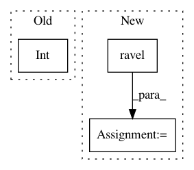

9b254aaf76efaa0a3789a67137c9817684862cf9,snntoolbox/simulation/target_simulators/loihi_target_sim.py,SNN,set_inputs,#SNN#Any#,350
Before Change
_, chip_id, core_id, cx_id, _, _ = \
self.net.resourceMap.compartment(node_id)
self.board.n2Chips[chip_id].n2Cores[core_id].cxCfg[
int(cx_id)].bias = int(inputs[i])
def preprocessing(self, **kwargs):
print("Normalizing thresholds.")
from snntoolbox.conversion.utils import normalize_loihi_network
After Change
AbstractSNN.set_spiketrain_stats_input(self)
def set_inputs(self, inputs):
inputs = np.ravel(inputs, "F")
// Normalize inputs and scale up to 8 bit.
inputs = (inputs / np.max(inputs) * 2 ** 8).astype(int)
for i, biasMant in enumerate(inputs):
In pattern: SUPERPATTERN
Frequency: 3
Non-data size: 3
Instances
Project Name: NeuromorphicProcessorProject/snn_toolbox
Commit Name: 9b254aaf76efaa0a3789a67137c9817684862cf9
Time: 2019-07-11
Author: bodo.rueckauer@intel.com
File Name: snntoolbox/simulation/target_simulators/loihi_target_sim.py
Class Name: SNN
Method Name: set_inputs
Project Name: biolab/orange3
Commit Name: 5b58ab5c45be8923e5d74e3bc84101be1ad13066
Time: 2017-08-21
Author: ales.erjavec@fri.uni-lj.si
File Name: Orange/widgets/unsupervised/owmds.py
Class Name: OWMDS
Method Name: _setup_plot
Project Name: Pinafore/qb
Commit Name: a6b5bd922d228e07177465cf4eca058954d3f8ad
Time: 2016-07-29
Author: mkhooja@gmail.com
File Name: qanta/guesser/classify/learn_classifiers.py
Class Name:
Method Name: compute_recall_accuracy